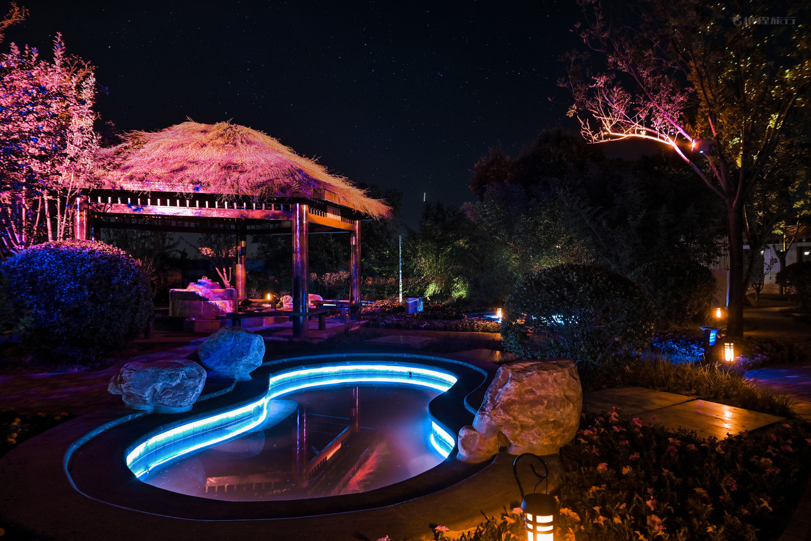
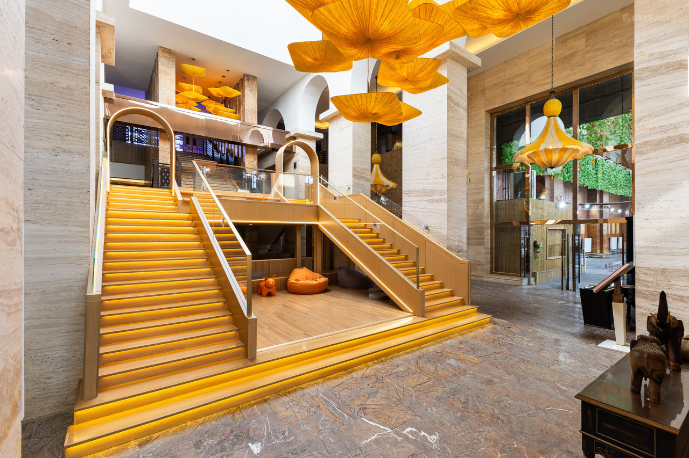
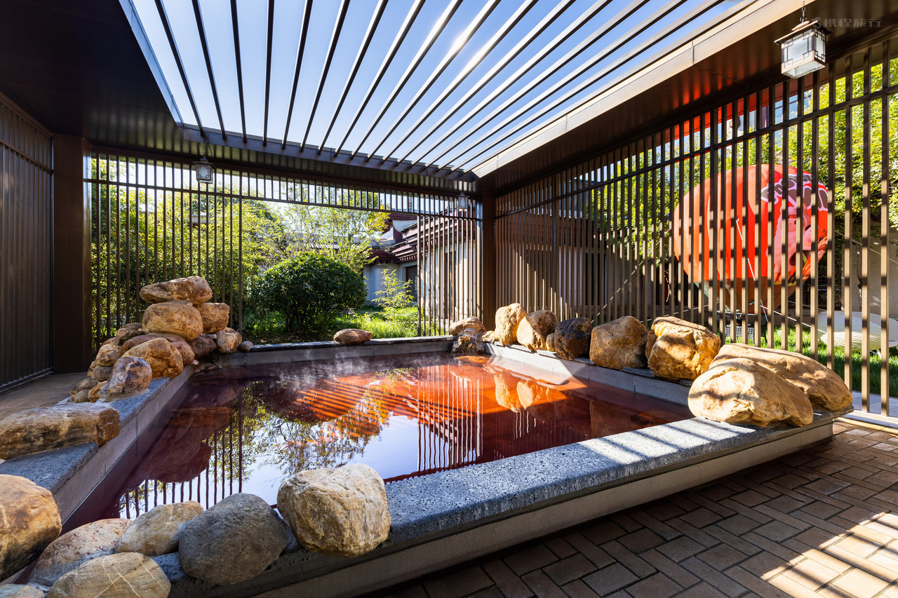
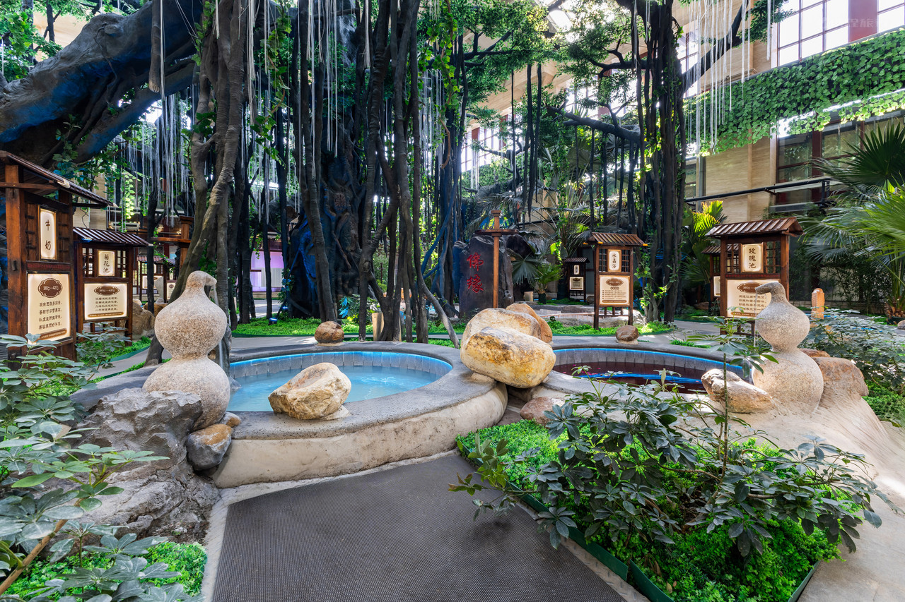
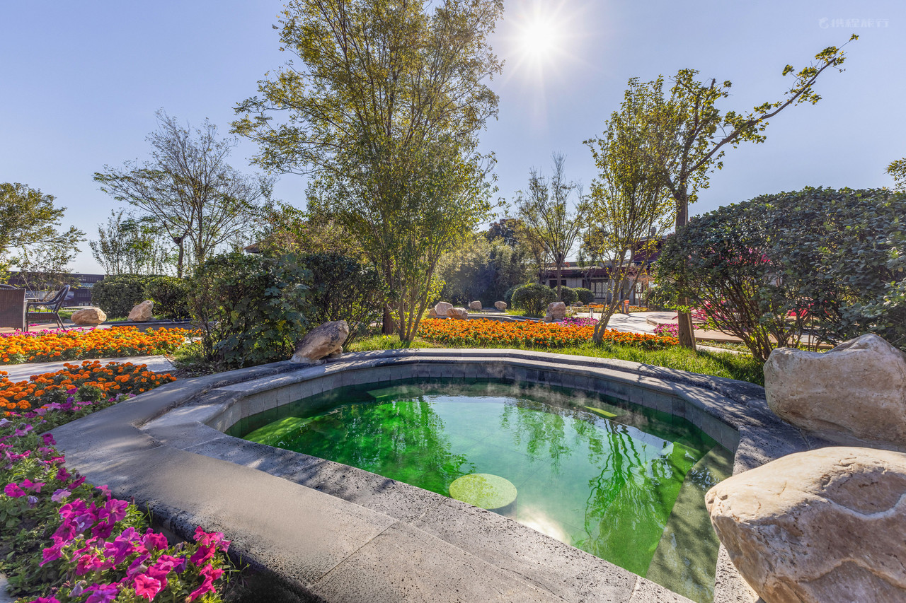
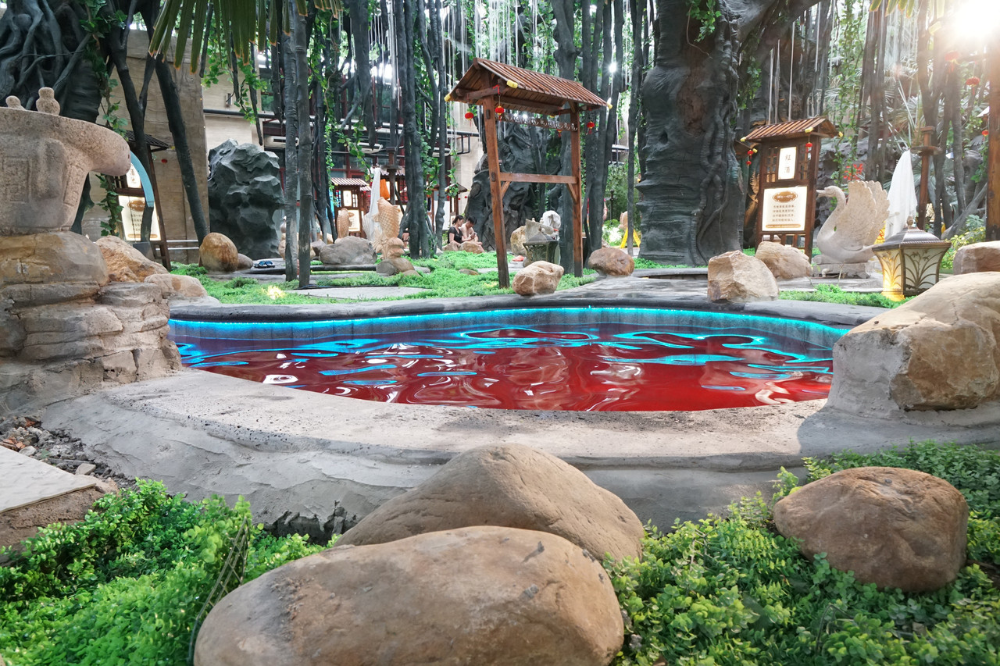
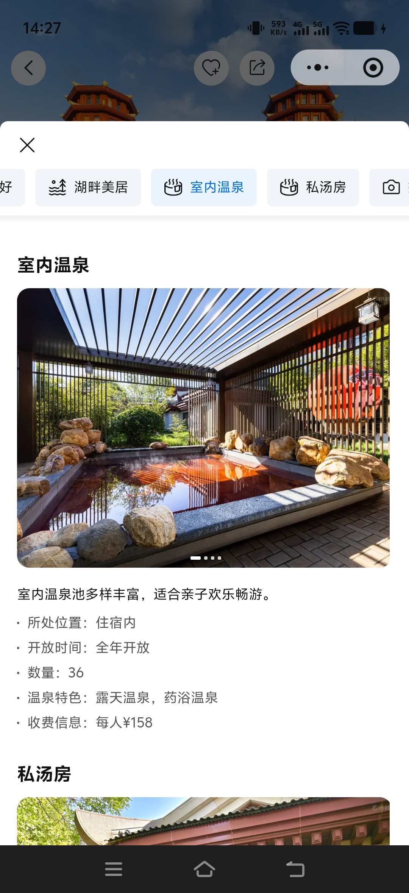

Tianjin Guanghegu Hot Spring Hotel
Guanghegu renovation archive
The linked photographs document the Guanghegu hot spring renovation.

















The linked photographs document the Guanghegu hot spring renovation.






